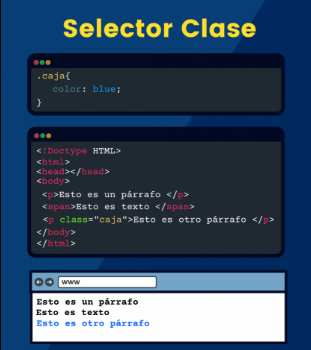

En este caso, en los titulos mostrados arriba, usamos dos selectores de clase: ."PrimerTitulo" y "Subtitulo". Esto para poder darle estilos distintos a cada uno de ellos, aun siendo todos realmente un h1.
Lo mismo podemos hacer con los parrafos, o con cualquier cosa que querramos asignar un estilo tanto propio, como compartido con otros de su misma clase, pero sin darles el mismo estilo a todos, sino pudiendo seleccionar por clase, esto nos da la posibilidad de hacer una pagina mas personalizada y optimizable en cada elemento.
